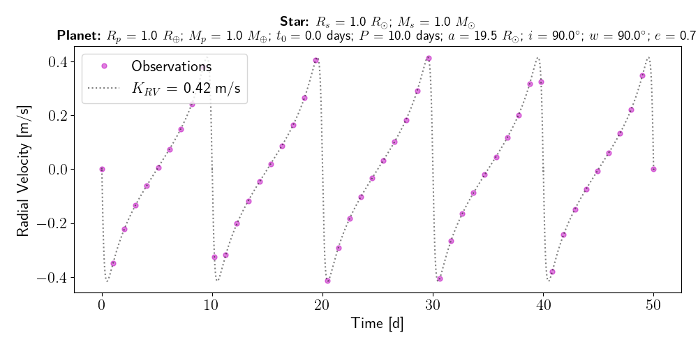
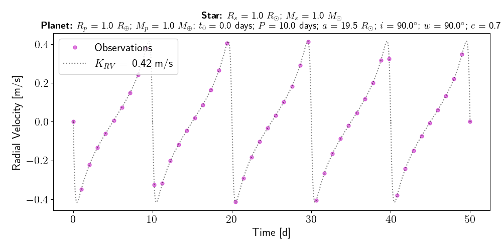

Tutorial¶
At the root of the MARVELsim repository two scripts called marvelsim.py and rv-generator.py are made availble for the user in the marvelsim/ directory. The former is the main script we will use to simulate the MARVEL spectra. We will in the following distinguish between the usage of the science mode and calibration mode of this software. To acquire an overview of the usage simply type:
python marvelsim.py -h
Intuitively the science mode should be used when simulating a Radial Velocity (RV) time series for which a cross-dispersion displacement in the simulated spectra is generated by the presence of an exoplanet orbiting its stellar host. We will ellaborate on how to perform such simulations in the following, but notice that the rv-generator.py is a small generic script to generate the RV time series as input for marvelsim.py.
The calibration mode of marvelsim.py is also known as afternoon calibrations as these calibrated spectral images are usually conducted during the afternoon prior to the nightly observations. We start explaining the generation of calibration spectra, then object spectra, and lastly how to generate RV time series.
See also
For more explicit examples on how to use either PyEchelle and Pyxel independently, have a look at the section extra examples.
Calibration mode¶
The script marvelsim.py makes it very easy to produce a batch of calibration data similar to what in the future will be produced in the afternoon, so-called afternoon calibrations. A batch of calibrated data consist of:
10 bias images
5 spectral flats (fiber 1-5)
5 ThAr arc spectra (fiber 1-5)
5 ThNe arc spectra (fiber 1-5)
5 Etalon (fiber 1) + ThAr (fiber 2-5)
The calibrated data are simply generated by adding the calibration flag and parsing the output directory to the simulator:
python marvelsim.py --calibs -o </path/to/output/>
As seen in the help-function printed to bash, you can easily alter the number of exposures and exposure time for each type of calibrated data.
Science mode¶
Like the calibration mode of marvelsim.py, the science mode is likewise very user frindly. In the following we show two usage examples simulating a single spectrum of a Sun-like star, with and without a RV signal:
python marvelsim.py --time 300 --mag 10.0 --teff 5800 --logg 4.5 --z 0.0 --alpha 0.0 -o </path/to/outdir>
python marvelsim.py --time 300 --mag 10.0 --teff 5800 --logg 4.5 --z 0.0 --alpha 0.0 --rv 5.5 -o </path/to/outdir>
Typically you want to simulate a larger batch of simulations comprising a RV time series of spectra. In the following we explain how to generate such a RV time series as input for marvelsim.py and later how you can lunch simulations with parallel computing.
RV time series¶
Within the marvelsim/ directory a script to generate noise-less RV amplitude time series exists. Again to get an overview of the parsed arguments simply type:
python rv-generator.py -h
This small utility explores the python library RadVel for calculating the true anomaly for a given set of input time point over the observed duration. The modelling of the RV time series are then calculated using the expression for the observed RV signal (Eq. 65) given by Murray & Correria (2010). Seen in the figure below, we here show an example of generating the RV time series for a single Earth-like planet with a short circular and eccentric orbital period, respectively:
python rv-generator.py -tdur 50 -rs 1 -ms 1 -rp 1 -mp 1 -t0 0 -p 10 -i 90 -w 90 -e 0.0
python rv-generator.py -tdur 50 -rs 1 -ms 1 -rp 1 -mp 1 -t0 0 -p 10 -i 90 -w 90 -e 0.5
 

{kind=link}
The script can also create models of multi-planet systems. As an example we here show how to model the K6V spectral type star TOI-1260 hosting two (transiting) mini-Neptunes on (assumed) circular orbits:
python rv-generator.py -tdur 50 -rs 0.67 -ms 0.69 -rp 2.33 2.82 -mp 8.6 11.8 -t0 10 20 -p 3.13 7.49 -i 90 90 -w 0 90 -e 0 0
{kind=link}
Note
Notice that the current version of rv-generator.py simply schedule an observation for each consecutive night separted exactly one day apart. In the future it will be possible to select the observational compaign through tighter constraints.
Attention
Be warned that the current multi-planet model is very simplistic and do not take into account of the gravitational interactions between the planets. Indeed such interactions perturbes the reflex motion of the stellar host.